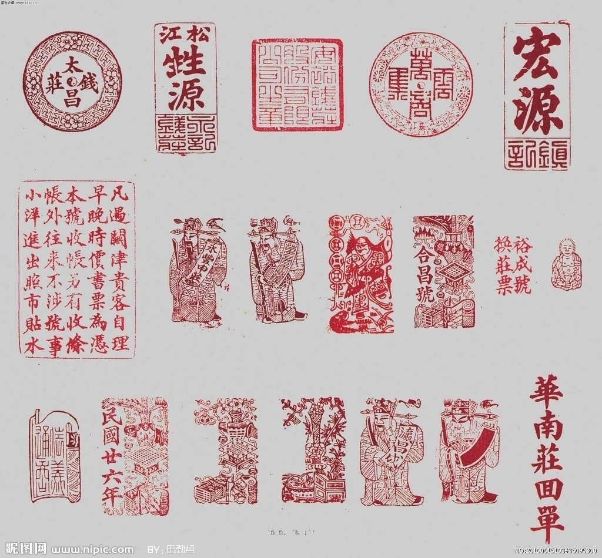
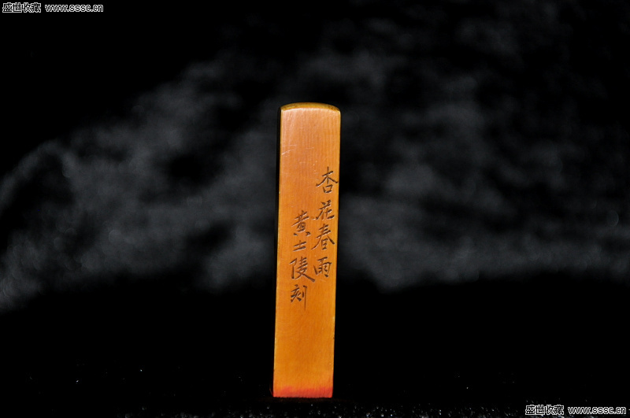
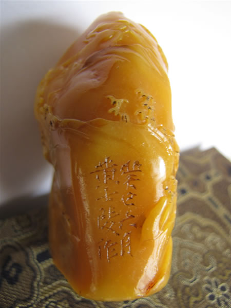

徽州篆刻
 中国古代印章一般由铜铸或凿制，也有金、玉等其他材质刻制的印章，主要为实用。宋、元以降，由于米芾、赵孟顺、吾丘衍等文人的提倡，印章开始由实用向艺术过渡，他们自己篆字，请人雕刻。明初王冕和明代中期的文彭发明用冻石刻印，融书法、绘画、雕刻于一体，使篆刻成为专门的造型欣赏艺术。但王冕和文彭一般也都是篆字，很少自己操刀。真正开文人刻印风气，自篆自刻，把篆刻推向艺术高峰的是徽州人何震、苏宣、朱简、汪关，世人称之为“徽派”。正是由于徽派篆刻的崛起，才真正确立了篆刻造型艺术地位。实现了由印章实用艺术向篆刻造型欣赏艺术的转变。 徽派篆刻兴起于明代中后期，其时徽州人何震、苏宣、朱简、汪关以篆刻名家，世人称“徽派”。在他们的影响下，徽派篆刻名家迭起，高手辈出，形成徽派篆刻的第一个高潮期。 清早中期，歙县程邃、巴慰祖、胡长庚、汪肇隆继承何、苏、朱、汪等印家的长处而又变革创新．专学秦汉，变化多姿，用力简涩，自成一体，人称“歙四子”。与歙四子同期的黄吕、黄宗缉、汪士慎、程瑶田、汪启淑、唐燠、程奂轮、程芝华、汪绍增、汪文适、陈思圣等徽州印人各呈风姿，形成徽派篆刻的第二个高潮期。 到了晚清，黟县黄士陵崛起，人称“黟山派”。黄士陵以其深厚的金石学修养，弃几百年来印家以切刀法毕仿烂铜印追求古拙残破美的传统习惯，自立新意，影响了后来的齐白石、李尹桑等人，形成徽派篆刻的第三个高潮。   黄士陵作品 近代黄宾虹治印师崇程邃、巴慰祖，印作苍劲淳朴，凝炼安详，对徽派篆刻有所发扬，在南社中享有盛誉。尤其黄宾虹大师对收集周秦古玺，考释印文，用力颇深，对印学发展很有贡献